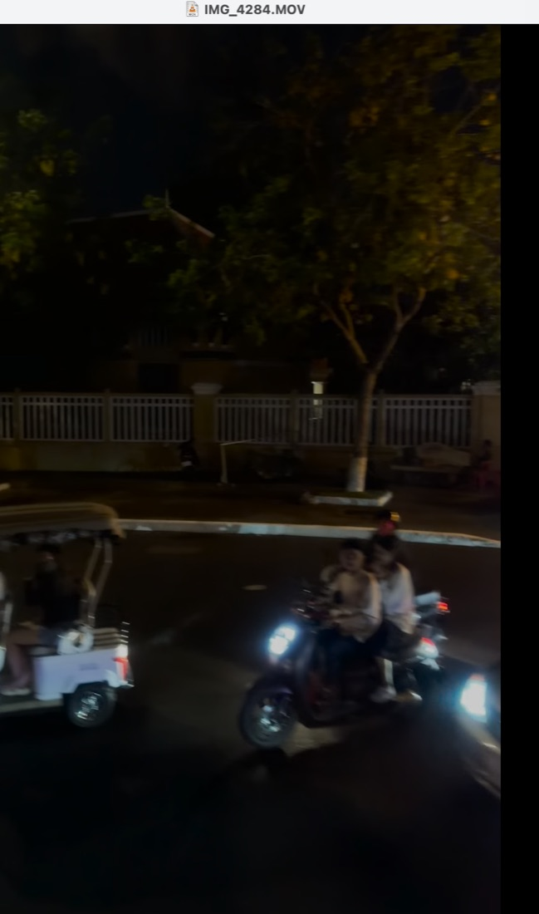

Epidemiology of Road Traffic Injuries

Road traffic crashes are the leading cause of death and permanent disability among children and adolescents in Cambodia.
Key Statistics
- At least four children lose their lives on Cambodia's roads every day.
- Annual economic cost: $1 billion USD (~5% of GDP).
- Motorcycles constitute 85%-98% of the active vehicle fleet.
- Pediatric mortality rate: 22% of total traffic fatalities involve youth under 19.